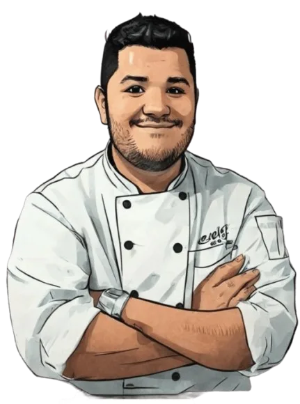

01 · 360º Advisory
Strategies that taste of success.
A no-frills diagnosis, a four-week plan and support until the change is done.

About me
Eight years of training and experience in renowned restaurants. Today I work with owners of bars, restaurants and cafés who want data, not pep talks. If you are looking for someone to tell you everything is fine, I am not your advisor.
My method is simple: I see your venue the way your customer does, I tell you the truth and I stay with you until the change is done.
Marcos González · Founder of GastroGoan
The 360º route
Five phases, six areas of the business.
I work hand in hand with each project through a process aimed at solving problems and producing real results. I assess six areas and rank them by priority.
Mystery diner
I visit your venue unannounced and experience your food and service like any other customer. It is the only way to see reality as it is.
Kick-off meeting
You tell me what is happening and we cross it with what I have seen. We come out with the real picture of your numbers and your goals.
Assessment
I analyse each area and give your venue an objective score, based on data and not impressions.
Action plan
Every change ranked by priority —urgent, important, complementary— in a four-week calendar.
Support
WhatsApp, a weekly video call and on-site visits for four weeks, so the plan does not stay in good intentions.

Extras that add up
When you need something specific.
One-off advice
A specific question, an important decision or a professional second opinion, with written conclusions.
Venue openings
Concept, menu, recipe costing, team and launch. A 30-day programme to open with judgement.
Event management
Planning and running events at your venue: from menu to service, with cost and timing control.
Staff recruitment
Profile definition, screening, interviews and practical tests. Staff who fit your venue.
Team training
Service protocols, suggestive selling and station organisation. At your venue, with your real team.
Team building
Gastronomic days to bring teams together: cooking together, tasting together and understanding the craft.
Social media
Content strategy for your venue: what to post, when and why. Social media that brings tables.
Food photography
A professional photo session of your dishes and your space, ready for menu, web and social media.
What sets us apart
How I work with you.
- Genuine passion for gastronomy in every strategy
- 100% tailored approach
- Total commitment to every client
- Practical strategies with real, measurable results
- Constant, close support
- Meticulous attention throughout the process
Your venue can give more. Let's talk.
First conversation free. You tell me your situation and I tell you whether I can help, or not.